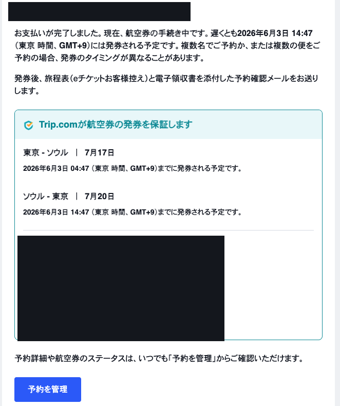
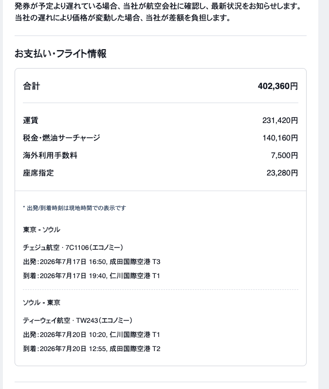

Flight & Stay
フライト・宿泊・空港⇄江南の移動
2026年7月17日（金）〜7月20日（月）の3泊4日。往路チェジュ航空・復路ティーウェイ航空、宿は江南区・駅三洞（ヨクサムドン）。出発地・空港・ホテル間の動きをまとめる。
航空券 支払い合計（6人分ではなく予約単位の金額）
402,360円
| 内訳 | 金額 |
|---|
| 運賃 | 231,420円 |
| 税金・燃油サーチャージ | 140,160円 |
| 海外利用手数料 | 7,500円 |
| 座席指定 | 23,280円 |
| 合計 | 402,360円 |
往復フライト
往路東京 → ソウルチェジュ航空 7C1106・エコノミー
16:50
7/17（金）
19:40
7/17（金）
成田国際空港 第3ターミナル（T3）
約2時間50分・現地時間表示
仁川国際空港 第1ターミナル（T1）
復路ソウル → 東京ティーウェイ航空 TW243・エコノミー
10:20
7/20（月）
12:55
7/20（月）
仁川国際空港 第1ターミナル（T1）
約2時間35分・現地時間表示
成田国際空港 第2ターミナル（T2）
✈️ ターミナル注意：往路チェジュ航空は成田 T3（LCC専用）発。復路ティーウェイ航空は成田 T2着で、往路と到着ターミナルが違う。仁川はどちらもT1。LCCは出発の2.5〜3時間前にはチェックイン開始を目安に。
予約確認（証跡）

Trip.com 予約確認：支払い完了・発券保証と往復日程（東京⇄ソウル 7/17・7/20）。※搭乗者氏名は個人情報のため黒塗り。

お支払い・フライト情報：運賃内訳（合計402,360円）と往復便 7C1106 / TW243。
宿泊施設｜Casa Luce（一軒家・メゾネット）
施設
住所
25 Teheran-ro 21-gil, 江南区, ソウル（테헤란로21길 25） 4階（4층） ／ 内階段で5階・屋上へ
立地
역삼（駅三）駅【2号線】徒歩3分／江南駅【2号線・新盆唐線】徒歩10分／空港バス6020番まで徒歩5分
構成
4階：寝室2・バス2・リビング・キッチン／5階：寝室2・バス1・簡易キッチン・屋上。クイーンベッド6台（最大12名）。エレベーターなし（内階段で4→5階）
チェックイン
2026年7月17日（金） 16:00〜
チェックアウト
2026年7月20日（月） 正午（12:00）
主なルール
屋内外すべて禁煙／深夜の騒音・大声厳禁（静かな住宅街）／玄関に防犯カメラ／ペット不可／予約人数以外の入室不可／臭い・煙の強い料理は不可
登録
외국인관광도시민박업（外国人観光都市民泊業）許可番号 제2026-77호（発行：서울특별시 강남구）
🛏️ ベッドはクイーン6台で6人ならゆったり。屋上から夜景を見ながら部屋飲みも可。ただし禁煙・騒音厳禁のルールは厳守（近隣苦情・ペナルティに注意）。喫煙は「タバコ」タブ参照。
⚠️ 復路フライトが7/20 10:20発のため、実際はチェックアウト可能時刻（正午）を待たず、7/20 早朝6:30〜7:00にはホテルを出発して直接空港へ向かう必要がある。前夜に精算・荷造りを済ませておく。
当日の動き（ドアtoドア）
① 7/17 出発地 → 成田 T3（京成スカイライナー）
出発地
〒101-0032 東京都千代田区 岩本町2-11-9 IT2ビル 5階
最寄り
秋葉原駅まで徒歩約8〜10分／日暮里方面まで徒歩約12〜15分。一番スムーズなのは 秋葉原 → JR → 日暮里 → スカイライナー。
ルート
会社 → 秋葉原（徒歩）→ 日暮里（JRで約10分）→ 京成スカイライナーで空港第2ビル駅（約45分）→ 第3ターミナルへ徒歩約13分（アクセス通路）。
料金
スカイライナー 日暮里→空港第2ビル 2,580円（運賃1,280＋ライナー券1,300）＋ 日暮里までのJR運賃。全席指定なので6席まとめて事前予約推奨。
🧑💻 空港で仕事ができるので、時間に余裕を持たせるのが正解。6人だと集合・改札・荷物預けで時間を使い、LCC（チェジュ航空）はチェックインカウンターも混みやすい。13:20〜13:30 会社出発がおすすめ。
✅ 推奨：余裕あり（13:30 会社発）
13:30会社出発 → 秋葉原へ徒歩
〜JRで日暮里へ（約10分）
14:16日暮里発 スカイライナー（〜14:20頃）
15:00空港第2ビル駅着 → T3へ徒歩約13分
15:15チェックイン（空港で仕事も可）
16:50成田T3 出発
現実的：ギリギリ（14:00 会社発）
14:00会社出発
14:46日暮里発 スカイライナー（〜14:50頃）
15:25空港着（〜15:30頃）
16:50成田T3 出発
② 7/17 仁川 T1 → ホテル（駅三洞）
到着
19:40着 → 入国・受託手荷物で20:30〜21:00頃に到着ロビー。夜間到着。
推奨（夜・荷物あり）
タクシー2台に分乗（Kakao Tで配車）。1台₩60,000〜75,000・60〜80分。楽で確実。
安さ重視
空港リムジンバス6020番（宿の最寄り＝Casa Luceから徒歩5分に停留所）。約₩17,000・70〜90分。最終便の時刻を要確認。
ホテル着
概ね22:00前後。初日はチェックイン後、江南で軽く一杯が現実的。
③ 7/20 ホテル → 仁川 T1（早朝）
出発
10:20発に間に合わせるため、6:30〜7:00にホテル出発（空港着8:00〜8:20目標）。
推奨（早朝）
タクシー2台。早朝は道が空き50〜60分・₩60,000〜70,000/台。Kakao Tで事前予約が安心。
代替
空港リムジンバス6009（早朝始発の時刻を前夜に確認）。荷物が少なければAREXも可だが乗換が多い。
④ 7/20 成田 T2 → 出発地（京成スカイライナー）
到着
復路 TW243 は成田 T2着 12:55。入国・手荷物受取で13:40頃に到着ロビー。
ルート
T2直結の空港第2ビル駅 → 京成スカイライナーで日暮里（約45分）→ 秋葉原/岩本町へ。T2着なので駅が近く乗り換えが楽。
料金
スカイライナー 空港第2ビル→日暮里 2,580円。
帰宅目安
14:00台のスカイライナー → 日暮里14:45頃 → 岩本町15:00頃着。
💡 事前準備：京成スカイライナーは往復とも全席指定・事前予約推奨（各6席）。韓国側の移動用にKakao T（配車・料金見積り）を全員インストール。往路T3・復路T2でターミナルが違う点、7/20は早朝出発になる点をグループで共有。T-money（交通カード）は到着後コンビニで人数分購入。
eSIM Setup
韓国eSIM設定ガイド（LG U+）
現地のネットは韓国eSIM（LG U+）を各自で購入・設定して確保する。出発前にWi-Fi環境で追加まで済ませておくのが安全。手順はそのままLINEに転送してもOK。
🎯 結論
通常利用中心の人はLTE、MacBookへのテザリングや動画・Web会議が多い人は5G。今回は3泊4日なので4日プラン。全員が出発前に各自で購入し、Wi-FiでeSIM追加まで完了させる。
全員が出発前にやること
電話アプリで *#06# → EID が表示される（eSIM対応）
SIMロックなしを確認（設定 › 一般 › 情報 › SIMロック）
LG U+公式サイトで各自購入（4日プラン・LTE or 5G）
届いたQRコードのメールを保存
Wi-Fi環境でeSIMを追加（追加後は回線を一旦オフ）
回線名を「韓国LGU+」に変更
日本ではLG U+回線をオフ／到着後にオン
到着後：モバイルデータ通信をLG U+に設定、日本回線のデータローミングはオフ
使うeSIM
LG U+公式 韓国eSIM 데이터 전용
韓国大手キャリア直販・データ無制限
韓国全域で5G／LTE、データ無制限、テザリング可、QRで設定、物理SIM入替不要、日本のSIMを残したまま使える。
※公式は「速度制限なしの完全無制限」と案内。ただし通信網へ過度な負荷時は速度制限の可能性あり。
① 事前確認（3点）
eSIM対応
iPhone XS/XS Max/XR・11以降・SE(第2世代)以降。電話で *#06# → EID が出ればOK（または 設定 › 一般 › 情報 › EID）。EIDは32桁前後の番号。
SIMロック
設定 › 一般 › 情報 › SIMロック が「SIMロックなし」。2021年10月以降に日本で購入した端末は基本ロックなし。あり の場合は購入キャリアで解除。
5G対応
5GプランはiPhone 12以降／SE(第3世代)が目安。11以前・SE2はeSIMは使えるが5G非対応（接続はLTEになる）。
② プラン（3泊4日）
| プラン | 期間 | 目安料金 | 向いている人 |
|---|
| 5G 無制限 | 4日 | 約30,000ウォン≒¥3,300前後 | PCへテザリング／動画／Web会議（Meet・Zoom）／写真・動画の大量送受信 |
| LTE 無制限 | 4日 | 約23,000ウォン≒¥2,500前後 | LINE／Google・NAVER Map／SNS／Web検索／店舗予約／軽い動画 |
💳 料金・キャンペーンは購入時点で変わるため最終は購入画面で確認。利用期間は「韓国で最初にデータ通信した時点」からカウント（例：7/17 19時に初通信なら4日プランは概ね7/21 19時頃まで）。
③ 購入前に用意するもの
パスポートクレジットカード設定するiPhoneWi-Fi環境QR表示用の別端末/PCメールアドレス
📷 QRコードの注意：設定するiPhone自身の画面にQRを出すと、そのiPhoneのカメラでは読めない。PCまたは同行者のスマホにQRを表示して自分のiPhoneで読み込む（または印刷）のが確実。
④ 購入手順
1
LG U+公式ページを開く（上の「公式ページ」ボタン）
2
商品が「韓国eSIM／データのみ」か確認（通話が必要なら「データ＋音声」）
3
速度を選択：LTE または 5G
4
日数：4日（期間は現地初回通信からカウント）
5
氏名・パスポート情報・メール・利用予定日・支払情報を入力（パスポート表記どおり）
6
クレカ決済 → 登録メールに購入完了メール・設定用QR・注文番号が届く（届かなければ迷惑メール確認）
⑤ 購入時の重要な注意
🚫 各自で購入（パスポート1冊で最大3つまで。6人分を1人がまとめない）／購入後は返金不可（EIDあり・SIMロックなし・日数・メールを購入前に必ず確認）／QRを他人のiPhoneで読み込まない（先に読むと本来の人が使えなくなる）／eSIMを削除しない（再インストール・再発行不可）／QRをSNS・グループに公開しない。
⑥ 日本での eSIM 追加（Wi-Fi環境で）
追加
設定 › モバイル通信 › eSIMを追加 › QRコードを使用 → 届いたQRを読み取り → eSIMをアクティベート › 続ける
追加後
日本で通信が始まらないよう、LG U+回線は一旦オフにしておく
⑦ 回線名を変更
手順
設定 › モバイル通信 › 追加したLG U+回線 › モバイル通信プランの名称 › カスタム名称 → 「韓国LGU+」「旅行用」などに
例
主回線：（普段の日本回線）／旅行用：韓国LGU+ → 現地で間違えにくくなる
⑧ 日本 出発前の状態
日本のSIM（主回線）
オン／データローミング：オフ
LG U+ eSIM
この回線：オフ
モバイルデータ通信
普段の日本回線
⑨ 韓国 到着後の設定
1
設定 › モバイル通信 › 韓国LGU+ › この回線をオン
2
設定 › モバイル通信 › モバイルデータ通信 › 韓国LGU+ に変更
3
「モバイルデータ通信の切替を許可」→ オフ（意図しないローミング防止）
4
LG U+側のデータローミングは購入案内／届いたメールに従って設定（旅行用eSIMはオンが必要な場合あり）
5
日本回線（主回線）のデータローミングをオフに固定
⑩ デュアルSIM 推奨設定（主回線＝普段の日本回線）
主回線（日本）
この回線：オン／データローミング：オフ／デフォルト音声回線：主回線
LG U+
この回線：オン／モバイルデータ通信：LG U+
共通
モバイルデータ通信の切替を許可：オフ
結果
データ通信＝LG U+／日本の電話番号・SMS受信＝主回線／LINE通話＝LG U+のデータ／テザリング＝LG U+
📱 主回線はどのキャリアでも手順は同じ（povo／docomo／au／SoftBank／ahamo／楽天モバイル 等）。ただし韓国で主回線の通常電話に出る・かけると海外ローミング通話料がかかる可能性。海外データの扱いは各社で異なる（ahamo・楽天は一部無料枠、他は基本オフ推奨）が、今回はデータをLG U+に固定するので、主回線のデータローミングは全社オフでOK。povoなど海外データトッピング未購入の回線は特にデータをLG U+側へ固定する。
⑪ 現地で電話を使いたい場合
データ通話
LINE通話／FaceTime Audio／WhatsApp／Instagram／Google Meet／Zoom はデータ通信なので利用可
通常電話
データ専用eSIMからは通常発信・SMS不可。① 主回線から国際ローミング発信 ② 店員・ホテルに依頼 ③ NAVER予約・Catch Table を使う ④ 「データ＋音声」プランを購入、のいずれか
⑫ テザリング
iPhone側
設定 › インターネット共有 › ほかの人の接続を許可 → オン。表示のWi-FiパスワードをMacBook等に入力
つながらない
① iPhone再起動 ② LG U+回線オンか ③ モバイルデータがLG U+か ④ 機内モードON→OFF ⑤ 共有OFF→ON ⑥ パスワード再入力
⑬ 接続できない時のチェック
順に確認
① 韓国LGU+：この回線オン ② モバイルデータ通信＝韓国LGU+ ③ データローミング（購入メールの指示に従う）④ iPhone再起動 ⑤ 機内モードON→10秒→OFF ⑥ ネットワーク選択＝自動
最終手段
設定 › 一般 › 転送またはiPhoneをリセット › ネットワーク設定をリセット（保存Wi-Fiパス・VPN設定が消えるので最後に）
⑭ 絶対にしないこと
✋ eSIMを削除する／他人のQRを読み込む／QRをSNS・グループへ公開する／1つのQRを複数端末で使う／日本回線をモバイルデータ通信のままにする／「モバイルデータ通信の切替を許可」をオンにする／購入メールを削除する／EID・SIMロックを確認せず購入する。
⑮ 帰国後の設定
日本回線（主回線）
モバイルデータ通信：普段の回線に戻す／データローミング：オフ
LG U+
この回線：オフ。すぐ削除しない（不要が確定してから削除）
Apps
出発前に入れておく必携アプリ
予約と移動はこの2つでほぼ完結。到着前にインストール＆アカウント作成まで済ませておくと現地がスムーズ。
CT
CATCHTABLE Global
人気店の予約・ウェイティング
韓国 No.1 のグルメ予約アプリの海外旅行者版。韓国の電話番号なしで、海外カードと英語で8,000店以上を予約可能。行列店のリモート順番待ちにも対応。
※韓国版とは別物。旅行者は必ず「Global」版を入れる。
N
Naver Map（네이버 지도）
地図・ナビ・交通
韓国ではGoogleマップが正確に機能しないため必須。徒歩・地下鉄・バスの経路検索、リアルタイム交通情報、ストリートビューに対応。日本語表示可。
※海外からのアカウント作成は弾かれることがあるが、ログインなしでも地図・ナビは使える。
T
KAKAO T（카카오 T）
タクシー配車・料金の事前見積り
韓国の定番タクシー配車アプリ。地図から呼べてぼったくりを回避でき、料金も乗る前に見える。6人なら2台に分けて配車。空港⇄ホテルやスポット間の夜間移動に必須。カード登録で降車もスムーズ。
P
Papago（파파고）
韓国語翻訳（音声・カメラ対応）
Naver製の翻訳アプリで韓⇄日の精度が高い。メニューや看板はカメラ翻訳、店員との会話は音声翻訳。喫煙所やスポットの場所を尋ねるときにも役立つ。
💡 さらにあると便利：KakaoTalk（連絡・店との予約）。時間があれば併せて。
Access from Gangnam
江南（カンナム）からの移動距離・時間・タクシー代
江南は漢江の「南」。観光・遊びの目的地の多くは漢江の「北」にあり、中心部までは概ね 10〜13km・車で25〜40分。近場（新沙・高速ターミナル・盤浦）は5〜15分圏内。イメージを掴むための早見表。
🚕 タクシー料金の目安：基本料金 ₩4,800（最初の1.6km）＋ 以降おおよそ ₩1,000/km。深夜（22時〜翌4時）は約20%割増（基本料金 ₩5,800）。渋滞時は時間もタクシー代も1.5倍前後まで伸びる。正確な額は Kakao T の事前見積りが確実。
※金額は日中・通常交通での概算（¥は ₩100≒¥11 換算の目安）。6人なら基本タクシー2台。
江南エリア内・近場（漢江の南）
| エリア | 距離(車) | 時間(通常) | タクシー概算 | 地下鉄・備考 |
|---|
| 新論峴（シンノンヒョン） | 約1km | 3〜5分 | ₩4,800≒¥530（基本料金） | 2号線1駅・徒歩も可 |
| 新沙・カロスキル | 約2.5km | 8〜12分 | ₩5,000〜7,000≒¥550〜770 | 新盆唐線1駅（約3分） |
| 高速ターミナル（セントラルシティ） | 約4km | 12〜18分 | ₩7,000〜8,000≒¥770〜880 | 3/7/9号線 |
| 盤浦漢江公園（月光噴水） | 約4.5km | 12〜18分 | ₩7,000〜9,000≒¥770〜990 | 駅から遠く、タクシー推奨 |
| 蚕室（ロッテワールド/タワー） | 約7km | 15〜25分 | ₩9,000〜12,000≒¥990〜1,320 | 2号線 |
漢江の北（中心部・観光の中心）
| エリア | 距離(車) | 時間(通常) | タクシー概算 | 地下鉄・備考 |
|---|
| 漢南洞（ハンナムドン） | 約6km | 15〜25分 | ₩9,000〜11,000≒¥990〜1,210 | 大人向けの食事・バー |
| 梨泰院（イテウォン） | 約7.5km | 20〜30分 | ₩10,000〜13,000≒¥1,100〜1,430 | 地下鉄は乗換で約35分 |
| 聖水洞（ソンスドン） | 約9km | 20〜30分 | ₩11,000〜14,000≒¥1,210〜1,540 | 2号線 |
| Nソウルタワー / 南山 | 約9km | 25〜35分 | ₩11,000〜14,000≒¥1,210〜1,540 | 麓＋ケーブルカー |
| 明洞（ミョンドン） | 約11km | 25〜40分 | ₩13,000〜16,000≒¥1,430〜1,760 | 地下鉄 約35分 |
| 南大門市場 | 約10.5km | 25〜40分 | ₩13,000〜16,000≒¥1,430〜1,760 | 明洞と隣接 |
| 広蔵市場 / 乙支路 | 約12km | 30〜40分 | ₩14,000〜17,000≒¥1,540〜1,870 | 食べ歩き・ポチャ |
| 仁寺洞 / 鍾路 | 約12km | 30〜40分 | ₩14,000〜17,000≒¥1,540〜1,870 | 1/3号線 |
| 東大門（タッカンマリ横丁） | 約13km | 30〜45分 | ₩15,000〜18,000≒¥1,650〜1,980 | 夜通し営業のエリア |
| 景福宮 / 北村 / 西村 | 約13km | 30〜45分 | ₩15,000〜18,000≒¥1,650〜1,980 | 地下鉄 約45分 |
漢江の西
| エリア | 距離(車) | 時間(通常) | タクシー概算 | 地下鉄・備考 |
|---|
| 汝矣島（ヨイド）漢江公園 | 約12km | 25〜35分 | ₩14,000〜17,000≒¥1,540〜1,870 | 夜景・ピクニック |
| 弘大（ホンデ） | 約13km | 25〜40分 | ₩15,000〜19,000≒¥1,650〜2,090 | 2号線で乗換なし・約35分 |
空港（往復の参考）
| エリア | 距離(車) | 時間(通常) | タクシー概算 | 地下鉄・備考 |
|---|
| 金浦空港（GMP） | 約20km | 30〜45分 | ₩22,000〜28,000≒¥2,400〜3,100 | 地下鉄・リムジンバス |
| 仁川空港（ICN） | 約55〜60km | 60〜80分 | ₩60,000〜75,000≒¥6,600〜8,300（+高速通行料） | リムジンバス約70分・AREX |
移動手段の使い分け
🚇 地下鉄：2号線が江南・弘大・乙支路など主要エリアを直結。安くて渋滞なし。移動の基本。T-money（交通カード）を全員分用意。
🚕 タクシー：6人なら2台に分乗。深夜・大荷物・雨の日・地下鉄が遠い目的地（盤浦など）で有効。Kakao T で配車＆料金見積り。
🍺 遊び拠点の考え方：飲み・ノレバンは江南／新論峴で徒歩圏完結が最も楽。中心部観光（明洞・景福宮・広蔵市場）は片道25〜40分なので、午前〜午後にまとめて北側を回り、夜は江南に戻るのが動きやすい。
Spots Access
スポットA〜Cへの移動
起点は宿泊先 Casa Luce（地下鉄2号線・역삼＝駅三駅 徒歩3分）。スポットA〜Cはいずれも江南区内で近距離。夜の移動が中心なので、6人ならKakao Tでタクシー2台に分乗が基本。
📍 以下は住所ベースの概算（番地は洞ベース表記のため、正確な位置と経路は Naver Map / Kakao Map で、料金は Kakao T の事前見積りで確認）。タクシー概算は日中・通常交通の目安（₩100≒¥11）。深夜は約20%割増。
| スポット | 住所・エリア | 営業・入店目安 | 宿（역삼）からの移動 | 概算 |
|---|
| A | 三成洞21Samseong-dong, 江南区 | 22:30〜24:30ごろ営業〜26時 | 2号線 역삼→삼성 約6分／タクシー10〜13分 | ₩6,000〜8,000≒¥660〜880 |
| B | 論峴路645Nonhyeon-ro, 江南区 | 19:30〜22:0020時までに入店 | タクシー約10分／地下鉄＋徒歩 | ₩5,000〜7,000≒¥550〜770 |
| C | テヘラン路223Teheran-ro, 江南区 | 19:30〜22:0020時までに入店 | 徒歩15分圏 or タクシー約5分 | ₩4,800前後≒¥530（基本料金） |
スポット別メモ
🅰 スポットA（三成洞）：初日（7/17）は22:30に迎えの車あり。フルーツ盛り合わせ・乾き物・ピザなどの軽食が食べられる（イメージはキャバクラのつまみ程度／by Tanaka）。ガッツリ食べたい場合はホテル到着前にコンビニで軽食・酒を購入しておくと安心。
🅱 スポットB（論峴路）：19:30〜22:00。20:00までに入店推奨。それ以降は交渉次第（交渉したい by Tanaka）。
🅲 スポットC（テヘラン路）：19:30〜22:00。20:00までに入店推奨。宿（역삼）から最も近く、徒歩圏 or タクシー数分。
💡 スポットB・Cは同じ時間帯（19:30〜22:00）なので別々の日に。行程では B・C を Day2/Day3 の夕方に振り分け、20時までに入店 → その後カジノ、の流れが動きやすい（「モデル行程」タブ参照）。
Restaurant Research
飯屋リスト（調査）
江南拠点で回りやすい店＋ソウルの定番名店をジャンル別に整理。人気店は行列必至なので、CATCHTABLE Global での事前予約かピーク（19〜21時）回避を推奨。★＝特におすすめ。
🥩 サムギョプサル・豚焼肉（江南・新論峴）
| 店名 | エリア | 特徴・メモ |
|---|
| 江南豚商会 ★강남돼지상회 | 江南駅11番出口 徒歩4分 | 花サムギョプサル。店員が焼いてくれる／日本語タッチパネル。11:30–23:30・要ウェイティング |
| 肉典食堂 ★육전식당 | 江南・新論峴 | ステーキ級に分厚いサムギョプサル＆モクサル。日本のTVでも紹介、日本人客が多く安心 |
| モックモン 新論峴목구멍 | 新論峴 | 江南3大ミナリサムギョプサル。釜蓋グリルで専門スタッフが焼く。会食向き・年末は要予約 |
| ボンウ二階家봉우이층집 | 江南駅近く | 熟成サムギョプサル＆モクサル。研修済み店員が焼く。会食・団体向き |
| クッタン꿉당 | 新沙 | 熟成モクサルが絶品。名物トリュフチャパゲティ。2人以上・要ウェイティング |
🐂 韓牛・牛焼肉（会食・接待）
| 店名 | エリア | 特徴・メモ |
|---|
| 倉庫43 江南店 ★창고43 | 江南 | 韓牛専門。コルキジフリー（持込可）・個室団体席。接待・会食に最適 |
| ケナリ会館개나리회관 | 狎鴎亭 徒歩1分 | 韓牛盛り合わせが名物。韓牛にウニのせの食べ方も |
| 映東塩焼き영동소금구이 | 論峴洞 | 韓牛特殊部位のコスパ老舗。ドラム缶テーブルのディープな雰囲気 |
🔥 コプチャン・ホルモン
| 店名 | エリア | 特徴・メモ |
|---|
| 江南コプ ★강남곱 | 江南駅 | ブルーリボン。下焼き提供で焼く手間なし・席広め。会食1次会の定番 |
| コムバウィ 本店곰바위 | 三成（COEX近く） | ヤン・大腸でミシュランビブグルマン常連。〆の전골も必食 |
| 往十里コプチャン横丁 | 往十里 | 横丁で地元の熱気。〆はポックンパ。匂いつくのでラフな服装で |
🍲 タッカンマリ（鶏一羽鍋）
| 店名 | エリア | 特徴・メモ |
|---|
| 陳玉華ハルメ 元祖タッカンマリ ★진옥화할매 | 東大門 横丁 | タッカンマリ通りの代表格。観光客対応にも慣れる |
| 巨成タッカンマリ거성닭한마리 | 東大門 横丁 | 創業20年、丁寧な仕事で地元評価 |
| ソムンナン元祖タッカンマリ소문난닭한마리 | 東大門 横丁 | 1970年代創業・約250席と広く6人でも入りやすい。韓方だし |
🥣 ソルロンタン・スープ（朝食・〆）
| 店名 | エリア | 特徴・メモ |
|---|
| 李門ソルロンタン ★이문설농탕 | 鍾路（光化門近く） | ソウル最古参クラスの名店。飲んだ翌朝に最適 |
| 豊年屋풍년옥 | 光化門 | すっきり旨みのソルロンタン。浅漬けキムチも評判 |
| 神仙ソルロンタン신선설농탕 | 江南ほか各所 | チェーンで入りやすい。江南でも朝食に便利 |
🍜 冷麺・プルコギ（名店）
| 店名 | エリア | 特徴・メモ |
|---|
| 又来屋 ★우래옥 | 乙支路4街 | 平壌冷麺＆プルコギの超有名老舗。焼肉の〆にも |
| 乙密台을밀대 | 麻浦 | 濃厚スープの平壌冷麺の名店 |
🏮 市場・食べ歩き
| 店名 | エリア | 特徴・メモ |
|---|
| 広蔵市場 ★광장시장 | 鍾路（東大門寄り） | ユッケ通り・ピンデトク・麻薬キンパ・スンデを少量シェア。昼〜夕方 |
| 通仁市場통인시장 | 西村 | コインでお弁当を作る食べ歩き。景福宮観光とセット |
| 明洞屋台 | 明洞 | チーズ系・海鮮串など。夜の食べ歩きに |
🍗 チキン・チメク（漢江）
| 店名 | エリア | 特徴・メモ |
|---|
| 漢江公園でチメク ★ | 盤浦／汝矣島 | デリバリー or コンビニでチキン＋ビール。夜景と一緒に。旅のハイライト |
| 人気チキンチェーン | 江南・全域 | キョチョン(교촌)／BBQ／クプネ(굽네)でヤンニョム＆フライド食べ比べ |
💡 予約・注文のコツ：人気焼肉・熟成店は CATCHTABLE で事前予約 or ピークを外す。焼肉は基本2人前〜、6人なら各種を少量ずつ頼んで食べ比べが◎。
Casino
ソウルのカジノ（外国人専用）
韓国のカジノは外国人専用が基本。韓国籍は入場不可、日本人はパスポート持参で入場無料。江南拠点なら三成（サムソン）COEXのセブンラック江南COEX店が最寄り。24時間営業で夜遊びの二次会にも組み込みやすい。
🎯 結論（今回の旅程）
土曜または日曜の昼に、セブンラック江南COEXへ1.5〜2時間が最効率。宿から近く24時間営業で予定に差し込みやすい。豪華さ重視なら仁川のINSPIRE／パラダイスシティ（往復含め半日＝4〜5時間）、高級感だけ味わうならウォーカーヒル。
1位 セブンラック江南COEX
2位 ウォーカーヒル
3位 INSPIRE（仁川）
4位 パラダイスシティ（仁川）
5位 ソウルドラゴンシティ
🪪 入場ルール（全店共通）：パスポート原本が必須（コピー不可）。満19歳以上の外国人のみ。入場料は無料。初回は受付でメンバーシップカードを無料作成（ポイントで飲食無料などの特典）。多くの店に日本語対応スタッフあり。
※両替所・ATMは館内にあり日本円→ウォン可。ゲーム後のチップ再両替も両替所で。
🥇 最寄り・第一候補
セブンラックカジノ 江南COEX店 세븐럭 강남코엑스
駅三洞から最も近い・24時間営業
韓国観光公社系（GKL）が運営する外国人専用カジノ。COEX（三成）内で駅三洞から地下鉄2号線でわずか数駅・車で10分程度。バカラが充実（テーブル63卓）で、電子テーブル（ETG）も多く初心者が少額で練習しやすい。日本語スタッフ在籍。
住所：江南区 テヘラン路87-58 COEXセンター／地下鉄2号線・三成（Samseong）駅5番出口 徒歩約400m、9号線・奉恩寺（Bongeunsa）駅7番出口 徒歩約200m。TEL +82-2-3466-6000
💡 江南の夜遊び（焼肉→ノレバン）の流れで寄れる立地。まずはETGでバカラ/ルーレットを少額から。
🛬 空港隣接（到着・出発日に）
パラダイスシティ Paradise City・仁川
韓国最大級のIR・仁川空港から無料シャトル5分
仁川空港（T1）隣接の統合型リゾート。カジノ＋ホテル＋スパ＋モール。セガサミー系で日本人向けサービスが手厚い。24時間営業、最低ベット₩5,000〜。空港T1から無料シャトルバス（約5分・5:05〜23:05／30分間隔）。
今回は往路到着が7/17 19:40（夜）、復路は7/20 10:20発（早朝）のため時間は取りにくいが、到着後に立ち寄る選択肢としてはアリ。TEL +82-32-729-3000
🏙️ ソウル最大級・老舗
パラダイスカジノ ウォーカーヒル Walkerhill・広津区
1968年開業・ソウル最大級／漢江ビュー
グランドウォーカーヒルソウル B1F。テーブル79卓＋スロット160台超のラスベガス型。江南からは2号線・江辺（カンビョン）駅からホテル無料シャトル約8分（6:20〜23:00・10分間隔）。江南からは車で30〜40分とやや遠い。
住所：広津区 ウォーカーヒル路177／TEL +82-2-450-4830
🚈 龍山（明洞・梨泰院方面の日に）
セブンラックカジノ ソウルドラゴンシティ店 서울드래곤시티
龍山・24時間・初心者も入りやすい
ソウルドラゴンシティ コンベンションタワー5階（龍山）。セブンラック系で入りやすく、明洞・弘大・梨泰院方面と組み合わせやすい。ただし江南拠点だとCOEXより遠く、今回はわざわざ選ぶ理由は少ない。
住所：95 Cheongpa-ro 20-gil, Yongsan-gu／パスポート必須・19歳以上・24時間
🎡 仁川・最新の大型IR
INSPIRE（インスパイア）カジノ 仁川・永宗島・2024開業
最新・韓国最大級・エンタメ型
15,000席アリーナ・屋内ウォーターパーク・デジタルアート・ホテルを備える統合型リゾート。カジノをしない人も時間を潰せてグループ向き。仁川空港近くで前後泊向き。ソウル中心部からは遠く、寄るなら半日。
住所：127 Gonghangmunhwa-ro, Jung-gu, Incheon／外国人専用
今回の5候補 比較
| 順位 | 施設 | 場所 | 宿から | 特徴 |
|---|
| 1 | セブンラック 江南COEX ★ | 三成・COEX | 車10分／2号線3駅 | 最寄り・24h・昼でも行ける。今回の第1候補 |
| 2 | ウォーカーヒル | 広津区 | 車30〜40分 | 老舗の高級感・バカラ充実。雰囲気重視 |
| 3 | INSPIRE | 仁川・永宗島 | 片道1h+ | 最新・最大級・エンタメ型。半日必要 |
| 4 | パラダイスシティ | 仁川空港隣 | 片道1h+ | 大型リゾート・日本人向け。前後泊向き |
| 5 | ソウルドラゴンシティ | 龍山 | 車25〜35分 | 龍山方面の日なら。江南からは優先度低 |
初心者の遊び方（4ステップ）
① 入場・登録：パスポートを提示して入場、受付で無料のメンバーシップカードを作る。
② 両替：館内の両替所で日本円→ウォン。使う上限額を先に決める（例：1人1〜3万円）。
③ ETGで練習：電子テーブル（ETG）は₩10,000程度から・画面を日本語に切替可。まずはバカラかルーレットで雰囲気を掴む。
④ テーブルへ：慣れたらディーラーのテーブルへ。バカラは「プレイヤー/バンカー/引分」に賭けるだけでルールは自動進行。バンカーが統計的にやや有利（多くの店で勝ち時5%手数料）。引分（配当8〜9倍）は初心者非推奨。
| ゲーム | 最低ベットの目安 | 初心者向き |
|---|
| ETG（電子テーブル） | ₩10,000〜 | ◎ 少額・日本語表示 |
| ルーレット | ₩5,000〜 | ◎ 直感的 |
| バカラ（テーブル） | ₩30,000前後〜 | ○ ルール自動進行 |
| ブラックジャック | ₩30,000前後〜 | ○ 基本戦略を覚えると◎ |
ゲームの種類
| ゲーム | 内容 | 初心者 |
|---|
| バカラ | PLAYER / BANKER / TIE に賭ける。韓国の主力 | ○ ルール単純（最低ベット高めの卓あり） |
| ブラックジャック | ディーラーより21に近づける | ○ 基本戦略を覚えると◎ |
| ルーレット | 赤黒／奇偶／数字に賭ける | ◎ グループ体験向き |
| タイサイ（大小） | サイコロ3個で 大小／奇偶／合計／ゾロ目 | ○ |
| スロット | 少額から。短時間体験に最適 | ◎ |
| 電子テーブル（ETG） | ディーラー卓より最低ベットが低い | ◎ まずはこれ |
予算の目安（1人）
| 遊び方 | 予算目安 |
|---|
| 見学＋スロット少し | ₩30,000〜50,000 |
| 1〜2時間遊ぶ | ₩100,000前後 |
| テーブル中心 | ₩200,000〜500,000 |
| 本格的に | ₩500,000〜 |
💰 大事なのは最初に「失ってよい上限」を決めること。6人なら「各自10万ウォンまで・追加両替しない・カードでキャッシングしない・貸し借りしない・勝っても延長しない」が安全。
カジノ内のマナー・注意
📷 撮影
フロアは基本撮影禁止（テーブル・ディーラー・客・チップ・モニター）。入口や指定フォトスポットのみ可の場合あり
🚬 喫煙
館内でも全面自由ではない。指定喫煙室・喫煙区域のみ。電子タバコも指定場所以外はNG（「タバコ」タブ参照）
💱 両替
日本円・USドル・ウォン等を扱うがレート・対応通貨は施設差。ウォン現金が一番分かりやすい
💳 カード
テーブルで直接賭けられない。キャッシングは手数料が高く使いすぎの元で非推奨
🎟️ チップ
そのカジノ内だけで有効。退出前に現金へ戻す（別店舗・別ブランドで使えるとは限らない）
👕 服装
ドレスコードは緩いが短パン・サンダル・スポーツウェアは避ける（スマートカジュアル）。ETG会員カードの差し忘れ・取り忘れ注意
🕒 昼 vs 夜：昼は空いていて初心者でも落ち着く（稼働卓は少なめ）。夜は卓が増え雰囲気があるが混雑＆飲酒後は予算管理が崩れやすい。今回は昼でOK。体験目的なら「土/日の13:00〜15:00にCOEX店」が最も合理的。
参考：韓国全国のカジノ（全18施設）
🇰🇷 韓国には集計対象で18のカジノ。うち韓国人が一般入場できるのは「江原ランド」1施設のみで、残りは外国人専用。済州島は8ライセンスあるが小規模施設は休業・名称変更が起きやすく直前確認が必要。
| エリア | 施設数 | 特徴 |
|---|
| ソウル | 3 | 観光客が最も行きやすい（COEX／ウォーカーヒル／ドラゴンシティ） |
| 仁川 | 2 | 空港近くの大型IR（INSPIRE／パラダイスシティ） |
| 釜山 | 2 | 西面（ロッテ）・海雲台（パラダイス） |
| 大邱 | 1 | 地方都市型 |
| 江原道 | 2 | 江原ランド（韓国人も入場可）・平昌 |
| 済州島 | 8 | 外国人専用・営業状況の変動あり |
| 合計 | 18 | 江原ランド以外は原則外国人専用 |
⚠️ 営業時間・最低ベット・シャトル時刻・入場要件は変更されることがある。訪問前に各公式サイト（7luck.com／p-city.com／paradisecasino.co.kr／inspireresort.com）で最新情報を確認する。
Smoking
タバコ（持ち込み・機内・喫煙所）
紙タバコ・電子タバコの韓国持ち込みと機内ルール、そして「どこで吸えるか」を整理。江南（駅三洞）拠点の喫煙所マップも調査済み。
🎯 結論
紙・電子とも韓国へ持ち込みは可能。ただし電子タバコは「入国の免税枠」と「機内での積み方」が別ルールで、種類ごとに扱いが変わる。電子タバコ本体は必ず機内持込（預け入れ不可）。
喫煙環境は「店内は日本以上に吸えない。屋外もどこでも吸えるわけではなく、指定喫煙所を探すのが基本」と考えるのが安全。
紙巻き 200本まで
リキッド 20ml・濃度1%未満
本体は機内持込のみ
CBD・THCは厳禁
店内・室内は原則禁煙
これだけ守れば大きく外さない（10の鉄則）
電子タバコ本体は手荷物（機内持込）に入れる
紙タバコは1人1カートン（200本）以内
ニコチンリキッドは合計20ml以内
CBD・THC入り製品は持っていかない
店内・ホテル・Airbnb室内では吸わない
屋外でも禁煙表示・駅・バス停・公園周辺では吸わない
「흡연실」「흡연구역」の表示がある場所を使う
Airbnbの屋外喫煙場所をホストに事前確認する
「電子タバコだから例外」とは考えない
迷ったら店員・警備員に「담배 어디서 피워요？」と聞く
🚨 最優先：今回の江南の一軒家（Airbnb）は、出発前にホストへ「喫煙可能な場所」を確認しておく。6人のうち複数が喫煙するなら滞在中の快適さがかなり変わる。
① 持ち込み・免税枠（韓国入国）
| 品目 | 免税枠の目安 | メモ |
|---|
| 紙巻きタバコ | 200本（1カートン） | 20本×10箱=枠内／11箱=超過。超過は申告。自主申告で軽減、無申告は追徴 |
| ニコチンリキッド | 20ml（濃度1%未満） | 10ml×2本=目安内／30ml=超過。超過は原則「申告・課税」の問題。大量NG |
| 加熱式スティックIQOS/glo/Ploom | 紙巻きに準じ最低限 | 本体1〜2台＋数箱なら個人使用として自然。多くても1カートン相当まで |
| 使い捨てVAPE | リキッド量に注意 | 1本に10〜15ml入ることも。合計20ml超に注意し1〜2本。パッケージ・容量表示を残す |
| CBD・THC・大麻由来 ★ | 持込厳禁 | 日本で合法のCBDでもNG。成分不明品も避ける。絶対に持っていかない |
🧾 免税枠は種類ごと。「紙1カートン＋スティック1カートン＋リキッド20ml」を全部別枠で免税、と単純加算しない方が安全。自分が普段使う1種類に絞るのが確実。
② 飛行機のルール（重要）
本体の積み方
IQOS/glo/Ploom/VAPE/使い捨て すべて機内持込のみ・預け入れ不可（バッテリー内蔵のため。仁川空港公式）。
機内での使用
吸う・電源ON・充電はいずれも禁止。電源OFF＋ケース＋金属と接触させない＋誤作動防止。
リキッド
液体物ルール適用：1容器100ml以下／透明袋にまとめ1L以下／1人1袋。基準は容器の容量（中身が少なくても容器が大きいとNG）。
液漏れ対策
気圧変化で漏れることがある。タンクを満タンにせず、ジップ袋に入れておく。
③ どこで吸える？（韓国は店内NGが基本）
店内は原則 全面禁煙
焼肉・サムギョプサル居酒屋・ポチャカフェ・レストランフードコートバー・クラブノレバン
🚭 電子タバコも紙タバコと同じ扱い。禁煙場所ではIQOS/glo/Ploom/VAPEも吸えない。「煙じゃなく蒸気」「臭いが少ない」は免責にならない。ホテルのトイレ・浴室は火災報知器・煙感知器・臭気センサーが反応する。
屋外も禁煙区域が多い
地下鉄駅の出入口バス停周辺公園・広場学校・病院周辺大型ビルの敷地人通りの多い歩道横断歩道周辺集合住宅の共用部
💸 江南駅周辺は特に注意。人通りが多く駅出入口・バス停・大通りが禁煙区域。喫煙者が固まっていても正式な喫煙所とは限らない。違反の過料は数万〜10万ウォン、取締員が巡回。「知らなかった／外国人だから」は免責されない。黄・青の喫煙所マーク、흡연구역／흡연실の表示がある場所を使う。
④ 喫煙所の探し方＋マップ（調査結果）
🚬 江南駅：ソチョ開放型 制煙喫煙施設 서초 개방형 제연 흡연시설
エアカーテン式・最大20人・臭い拡散少なめ
瑞草区が江南駅裏手（서초대로78길 一帯）に設置した、全国初のエアカーテン付き開放型喫煙施設（2.4m×7.2m×3.4m）。3面のエアカーテン＋屋根の制煙浄化装置で煙の拡散を抑える構造。江南駅で吸うならまずここが目印。
※駅三洞は江南区、江南駅一帯は瑞草区にまたがる。区ごとに条例・マップが異なる点に注意。
マップ・アプリ（現地でブックマーク推奨）
| サービス | 種別 | メモ |
|---|
| NAVER Map / KakaoMap | 地図アプリ | Googleより情報量多い。検索語「흡연구역」「강남역 흡연구역」「강남역 흡연실」「smoking area」 |
| smoking-map.com | 喫煙所マップ | 흡연맵。周辺の喫煙区域・コンビニ・ベイプ店 |
| smokingarea.site | 喫煙所マップ | 江南・弘大・鍾路・梨泰院など主要都心＋京畿 |
| pioom.cloud | 喫煙所マップ | 여기서피움。江南駅周辺ガイドあり・現在地から最寄りを検索 |
| seochomap.qrcode.or.kr | 瑞草区 公式 | 金/禁煙区域・喫煙ブースをQR案内。江南駅一帯（瑞草区）に有効 |
📍 喫煙所は閉鎖・移設されることがあり、地図に出ていても現地でなくなっている場合がある。最も確実なのは商業施設の案内所・ホテルフロント・店員・ビル警備員に聞くこと。現地の案内板QRコードも活用。
覚えておくと便利な韓国語
| 韓国語 | 読み方 | 意味 |
|---|
| 흡연실 | フビョンシル | 喫煙室 |
| 흡연구역 | フビョングヨク | 喫煙区域 |
| 흡연장 | フビョンジャン | 喫煙場所 |
| 금연 / 금연구역 | クミョン / クミョングヨク | 禁煙 / 禁煙区域 |
| 담배 | タンベ | タバコ |
| 재떨이 | チェットリ | 灰皿 |
🗣️ 使えるフレーズ：「담배 어디서 피워요？（タンベ オディソ ピウォヨ＝どこで吸えますか）」／「흡연실 있어요？（フビョンシル イッソヨ＝喫煙室ありますか）」
⑤ ホテル・Airbnb・空港
ホテル
全館または客室禁煙が一般的。禁煙室で吸うと特別清掃・消臭・デポジット没収などで数十万ウォン請求も。電子も同じ。バルコニーも要確認（발코니에서 담배 피워도 돼요？）。
今回のAirbnb
一軒家でも室内可とは限らない。ハウスルールの喫煙可否を確認し、記載がなくてもホストに事前確認。6人が一斉に家の前で吸うと近隣苦情の恐れ→分散＆携帯灰皿。
ホスト確認：숙소 내부는 금연인가요？ 흡연 가능한 장소가 있으면 알려주세요.
空港
成田・仁川とも指定喫煙室あり（保安検査 前/後・到着/出発でフロアが分かれる）。仁川は入国・受取・税関を抜けるまで移動制限で到着後すぐ吸えるとは限らない。「Smoking Room／흡연실」を探す。トイレ・非常階段は不可。
⑥ 持ち方チェック（タイプ別）
🔥 IQOS / glo / Ploom
・本体＆充電器は機内持込
・スティックは必要量のみ（多くても1カートン相当）
・電源OFF＋ケース
・預け荷物に本体を入れない／機内で充電しない
💨 リキッドVAPE
・本体＆予備バッテリーは機内持込
・リキッド合計20ml以内・各容器100ml以下・透明袋
・CBD/THCなし、成分表示のパッケージを残す
・満タンにせず液漏れ対策
🚬 紙巻きタバコ
・1人200本以内
・ライターは航空会社・空港の規則を確認
・他人の分をまとめて1人が持たない
・免税店購入分も韓国入国時の総量に含める
Souvenirs
お土産リスト（社員依頼）
Aさん＝コスメ／菓子7商品、Bさん＝クルンジ。容量・セット内容まで画像に合わせて記載。オリーブヤング（올리브영）中心で、菓子はコンビニ・スーパーでも入手可。
Aさん依頼（7商品）
🚨 間違えやすい3点：③ Dr.Gは通常70ml と 企画セット、⑤ Torridenトナーは300ml と 500ml、⑥ベーグルチップ と ⑦アーモンドは別商品。ここだけ要注意。
| # | 商品 | 容量・セット | メモ |
|---|
| 1 | MEDIHEAL マデカッソシド エッセンシャルマスクMADECASSOSIDE ESSENTIAL MASK | 1枚〜（各種セット） | 7種のうちマデカッソシド／青緑パッケージが画像に最も忠実 |
| 2 | ma:nyo（魔女工場）ピュリファイング クレンジング ソーダフォームPurifying Cleansing Soda Foam | 150ml | ソーダ洗顔料。販売者により日本語表記が異なる |
| 3 | Dr.G レッドブレミッシュ クリアスージングクリーム EX ★R.E.D BLEMISH Clear Soothing Cream EX | 70ml 企画セットクリーム計100ml＋セラム20ml | 通常70ml単品と間違えない。オリーブヤング限定の増量企画 |
| 4 | Torriden ダイブイン 低分子ヒアルロン酸マスクDIVE IN Mask | 10＋2枚（計12枚） | ダイブイン11枚＋バランスフル1枚の企画 |
| 5 | Torriden ダイブイン 低分子ヒアルロン酸トナー ★DIVE IN Toner | 500ml＋のびるコットン60枚 | 300mlと間違えない。500mlの大容量企画 |
| 6 | Delight Project ハニーバター ベーグルチップ ★HONEY BUTTER BAGEL CHIP | 60g | ベーグルを焼いたチップス。⑦アーモンドと別物 |
| 7 | HBAF ハニーバターアーモンドHONEY BUTTER ALMOND | 35g小袋 or 190g前後 | 指定なければ小袋か通常袋が選びやすい |
コピペ用リスト（検索リンク）
1. MEDIHEAL マデカッソシド エッセンシャルマスク
https://www.amazon.co.jp/s?k=MEDIHEAL+マデカッソシド+エッセンシャルマスク
2. ma:nyo ピュリファイング クレンジング ソーダフォーム 150ml
https://www.amazon.co.jp/dp/B01CKL1ZF0
3. Dr.G レッドブレミッシュ クリアスージングクリーム EX 70ml 企画セット
https://www.amazon.co.jp/s?k=Dr.G+レッドブレミッシュ+クリアスージングクリーム+EX+企画セット
4. Torriden ダイブイン 低分子ヒアルロン酸マスク 10＋2枚企画
https://www.amazon.co.jp/s?k=Torriden+ダイブイン+低分子ヒアルロン酸マスク+10枚
5. Torriden ダイブイン 低分子ヒアルロン酸トナー 500ml＋コットン60枚
https://www.amazon.co.jp/s?k=Torriden+ダイブイン+トナー+500ml
6. Delight Project ハニーバター ベーグルチップ 60g
https://www.amazon.co.jp/s?k=Delight+Project+ハニーバター+ベーグルチップ
7. HBAF ハニーバターアーモンド
https://www.amazon.co.jp/s?k=HBAF+ハニーバターアーモンド
🛒 コスメ①〜⑤は現地オリーブヤングで箱の容量・セット内容を確認して買うのが確実（免税・割引も狙える）。菓子⑥⑦はコンビニ／マートやロッテ免税店でも入手可。上のリンクは帰国後の買い直し・照合用。
Bさん依頼
| 商品 | メモ |
|---|
| クルンジ（크런지）クロワッサンを圧縮した焼き菓子 | クロワッサン生地をプレスして薄焼きにした韓国の人気菓子。カフェ・製菓店・スーパー・オリーブヤング等で。見つかれば購入 |
B. クルンジ（クロワッサンを圧縮した焼き菓子）
https://www.qoo10.jp/s/크런지+クルンジ
https://www.amazon.co.jp/s?k=クルンジ+クロワッサン
🥐 「クルンジ（크런지）」はクロワッサンを圧縮して焼いた食感のスナック。現地のベーカリー系・スーパー・空港売店で見かけたら確保。ブランド違いが複数あるので、クロワッサン圧縮タイプであればOK。
Phrasebook
会話フレーズ集（韓国語）
そのまま見せる・読み上げる・コピペするための実用フレーズ。カタカナは目安。基本は語尾を「ヨ」まで付けた丁寧語ならまず失礼にならない。上の検索かカテゴリのチップで目的の場所へすぐ飛べる。
該当するフレーズが見つかりません。検索語を変えてみてください。
⭐ まず最優先で覚える20
| 日本語 | 読み方 | 韓国語 |
|---|
| こんにちは | アンニョンハセヨ | 안녕하세요 |
| ありがとうございます | カムサハムニダ | 감사합니다 |
| すみません | チェソンハムニダ | 죄송합니다 |
| ちょっといいですか | チャムシマンニョ | 잠시만요 |
| お願いします | プタクトゥリムニダ | 부탁드립니다 |
| 大丈夫です | クェンチャナヨ | 괜찮아요 |
| わかりません | モルゲッソヨ | 모르겠어요 |
| 韓国語ができません | ハングゴルル モッテヨ | 한국어를 못해요 |
| 日本人です | イルボン サラミエヨ | 일본 사람이에요 |
| 英語は話せますか | ヨンオ ハル ス イッソヨ | 영어 할 수 있어요? |
| ゆっくり話してください | チョンチョニ マレ ジュセヨ | 천천히 말해 주세요 |
| もう一度お願いします | タシ ハンボン マレ ジュセヨ | 다시 한번 말해 주세요 |
| これは何ですか | イゲ ムォエヨ | 이게 뭐예요? |
| いくらですか | オルマエヨ | 얼마예요? |
| これをください | イゴ ジュセヨ | 이거 주세요 |
| トイレはどこですか | ファジャンシリ オディエヨ | 화장실이 어디예요? |
| ここへ行きたいです | ヨギ カゴ シポヨ | 여기 가고 싶어요 |
| 助けてください | トワジュセヨ | 도와주세요 |
| カードは使えますか | カドゥ デヨ | 카드 돼요? |
| 写真を撮ってもらえますか | サジン チゴ ジュシル ス イッソヨ | 사진 찍어 주실 수 있어요? |
1. あいさつ・基本会話
| 日本語 | 読み方 | 韓国語 |
|---|
| こんにちは | アンニョンハセヨ | 안녕하세요 |
| はじめまして | チョウム ペッケッスムニダ | 처음 뵙겠습니다 |
| お会いできてうれしいです | マンナソ パンガウォヨ | 만나서 반가워요 |
| お元気ですか | チャル チネセヨ | 잘 지내세요? |
| 元気です | チャル チネヨ | 잘 지내요 |
| 久しぶりです | オレンマニエヨ | 오랜만이에요 |
| 今日はよろしくお願いします | オヌル チャル プタクトゥリョヨ | 오늘 잘 부탁드려요 |
| さようなら（相手が帰る） | アンニョンヒ カセヨ | 안녕히 가세요 |
| さようなら（自分が帰る） | アンニョンヒ ケセヨ | 안녕히 계세요 |
| また会いましょう | ト マンナヨ | 또 만나요 |
| また連絡します | ト ヨルラカルケヨ | 또 연락할게요 |
| 気をつけて帰ってください | チョシメソ カセヨ | 조심해서 가세요 |
| 楽しかったです | チュルゴウォッソヨ | 즐거웠어요 |
| 今日はありがとうございました | オヌル カムサヘッソヨ | 오늘 감사했어요 |
2. 感謝・謝罪・お願い
| 日本語 | 読み方 | 韓国語 |
|---|
| ありがとうございます | カムサハムニダ | 감사합니다 |
| 本当にありがとうございます | チョンマル カムサハムニダ | 정말 감사합니다 |
| 助かりました | トウミ トェッソヨ | 도움이 됐어요 |
| 親切ですね | チンジョラシネヨ | 친절하시네요 |
| ご配慮ありがとうございます | ペリョヘ ジュショソ カムサハムニダ | 배려해 주셔서 감사합니다 |
| すみません（謝罪） | チェソンハムニダ | 죄송합니다 |
| ごめんなさい | ミアネヨ | 미안해요 |
| 遅れてすみません | ヌジョソ チェソンハムニダ | 늦어서 죄송합니다 |
| 間違えました | チェガ チャルモテッソヨ | 제가 잘못했어요 |
| 失礼しました | シルレヘッスムニダ | 실례했습니다 |
| わざとではありません | イルブロ クロン ゴン アニエヨ | 일부러 그런 건 아니에요 |
| お願いします | プタクトゥリョヨ | 부탁드려요 |
| ちょっと待ってください | チャムシマン キダリョ ジュセヨ | 잠시만 기다려 주세요 |
| これを手伝ってください | イゴッ チョム トワジュセヨ | 이것 좀 도와주세요 |
| 見せてください | ポヨ ジュセヨ | 보여 주세요 |
| 教えてください | アルリョ ジュセヨ | 알려 주세요 |
| 書いてください | ソ ジュセヨ | 써 주세요 |
| ここを押してください | ヨギルル ヌルロ ジュセヨ | 여기를 눌러 주세요 |
| これを確認してください | イゴッ チョム ファギネ ジュセヨ | 이것 좀 확인해 주세요 |
💡「좀（チョム）」＝直訳は「少し」だが、依頼を柔らかくする役割。頼みごとに付けると自然。
3. 聞き返す・言葉が通じないとき
| 日本語 | 読み方 | 韓国語 |
|---|
| 韓国語がわかりません | ハングゴルル チャル モルラヨ | 한국어를 잘 몰라요 |
| 韓国語が話せません | ハングゴルル モッテヨ | 한국어를 못해요 |
| 日本語は話せますか | イルボノ ハル ス イッソヨ | 일본어 할 수 있어요? |
| 英語は話せますか | ヨンオ ハル ス イッソヨ | 영어 할 수 있어요? |
| ゆっくり話してください | チョンチョニ マレ ジュセヨ | 천천히 말해 주세요 |
| もう一度言ってください | タシ マレ ジュセヨ | 다시 말해 주세요 |
| 何と言いましたか | ムォラゴ ハショッソヨ | 뭐라고 하셨어요? |
| どういう意味ですか | ムスン トゥシエヨ | 무슨 뜻이에요? |
| 文字で書いてください | クルロ ソ ジュセヨ | 글로 써 주세요 |
| 翻訳機を使ってもいいですか | ポニョッキルル ソド デヨ | 번역기를 써도 돼요? |
| この画面を見てください | イ ファミョヌル パ ジュセヨ | 이 화면을 봐 주세요 |
| 合っていますか | マジャヨ | 맞아요? |
| 違います | アニエヨ | 아니에요 |
| 理解しました | イヘヘッソヨ | 이해했어요 |
| まだよくわかりません | アジク チャル モルゲッソヨ | 아직 잘 모르겠어요 |
4. 道を聞く・場所を探す
| 日本語 | 読み方 | 韓国語 |
|---|
| ここはどこですか | ヨギガ オディエヨ | 여기가 어디예요? |
| ○○はどこですか | ○○イ オディエヨ | ○○이 어디예요? |
| ○○へ行きたいです | ○○エ カゴ シポヨ | ○○에 가고 싶어요 |
| どうやって行きますか | オットケ カヨ | 어떻게 가요? |
| 歩いて行けますか | コロソ カル ス イッソヨ | 걸어서 갈 수 있어요? |
| 遠いですか | モロヨ | 멀어요? |
| 近いですか | カッカウォヨ | 가까워요? |
| 何分くらいかかりますか | ミョッ プン チョンド コルリョヨ | 몇 분 정도 걸려요? |
| この道で合っていますか | イ キリ マジャヨ | 이 길이 맞아요? |
| 地図で示してください | チドエソ ポヨ ジュセヨ | 지도에서 보여 주세요 |
| 入口はどこですか | イックガ オディエヨ | 입구가 어디예요? |
| 出口はどこですか | チュルグガ オディエヨ | 출구가 어디예요? |
| エレベーターはどこですか | エルリベイトガ オディエヨ | 엘리베이터가 어디예요? |
| 地下ですか | チハエヨ | 지하예요? |
| 何階ですか | ミョッ チュンイエヨ | 몇 층이에요? |
| 左 | ウェンチョク | 왼쪽 |
| 右 | オルンチョク | 오른쪽 |
| 直進 | チクチン | 직진 |
| 前 / 後ろ | アプ / トゥィ | 앞 / 뒤 |
| 向かい側 | コンノピョン | 건너편 |
| 近く / 隣 | クンチョ / ヨプ | 근처 / 옆 |
| 中 / 外 | アン / パク | 안 / 밖 |
| 上 / 下 | ウィ / アレ | 위 / 아래 |
| まっすぐですか | チクチニエヨ | 직진이에요? |
| 右ですか / 左ですか | オルンチョギエヨ / ウェンチョギエヨ | 오른쪽이에요? / 왼쪽이에요? |
| あの建物ですか | チョ コンムリエヨ | 저 건물이에요? |
| ここを渡りますか | ヨギソ コンノヨ | 여기서 건너요? |
| 次の角ですか | タウム モトゥンイエヨ | 다음 모퉁이예요? |
5. タクシーで使う言葉
| 日本語 | 読み方 | 韓国語 |
|---|
| ここまでお願いします | ヨギッカジ カ ジュセヨ | 여기까지 가 주세요 |
| この住所までお願いします | イ チュソロ カ ジュセヨ | 이 주소로 가 주세요 |
| このホテルまでお願いします | イ ホテルロ カ ジュセヨ | 이 호텔로 가 주세요 |
| 江南駅までお願いします | カンナムニョッカジ カ ジュセヨ | 강남역까지 가 주세요 |
| この画面の場所までお願いします | イ ファミョネ インヌン ゴスロ カ ジュセヨ | 이 화면에 있는 곳으로 가 주세요 |
| 6人です | ヨソッ ミョンイエヨ | 여섯 명이에요 |
| 2台必要です | トゥ デガ ピリョヘヨ | 두 대가 필요해요 |
| 大型タクシーはありますか | テヒョン テクシ イッソヨ | 대형 택시 있어요? |
| トランクを開けてください | トゥロンクルル ヨロ ジュセヨ | 트렁크를 열어 주세요 |
| 荷物があります | チミ イッソヨ | 짐이 있어요 |
| 一番早い道でお願いします | チェイル パルン キルロ カ ジュセヨ | 제일 빠른 길로 가 주세요 |
| 高速道路を使ってください | コソクトロロ カ ジュセヨ | 고속도로로 가 주세요 |
| 高速道路を使わないでください | コソクトロヌン イヨンハジ マラ ジュセヨ | 고속도로는 이용하지 말아 주세요 |
| 急いでいます | シガニ チョム チョッパケヨ | 시간이 좀 촉박해요 |
| ゆっくりで大丈夫です | チョンチョニ カショド クェンチャナヨ | 천천히 가셔도 괜찮아요 |
| ここで待ってください | ヨギソ キダリョ ジュセヨ | 여기서 기다려 주세요 |
| エアコンを弱く/強くしてください | エオコヌル ヤカゲ/セゲ ヘ ジュセヨ | 에어컨을 약하게/세게 해 주세요 |
| 音楽を少し小さくしてください | ウマグル チョグム チュリョ ジュセヨ | 음악을 조금 줄여 주세요 |
| ここで降ります | ヨギソ ネリルケヨ | 여기서 내릴게요 |
| ここで止めてください | ヨギ セウォ ジュセヨ | 여기 세워 주세요 |
| 建物の前でお願いします | コンムル アペ セウォ ジュセヨ | 건물 앞에 세워 주세요 |
| カードで払います | カドゥロ ケサナルケヨ | 카드로 계산할게요 |
| 現金で払います | ヒョングムロ ケサナルケヨ | 현금으로 계산할게요 |
| 領収書をください | ヨンスジュン ジュセヨ | 영수증 주세요 |
| お釣りをください | コスルムトン ジュセヨ | 거스름돈 주세요 |
| 忘れ物をしました | ムルゴヌル トゥゴ ネリョッソヨ | 물건을 두고 내렸어요 |
| 場所が違います | チャンソガ タルラヨ | 장소가 달라요 |
| 道が違うと思います | キリ タルン ゴッ カタヨ | 길이 다른 것 같아요 |
| メーターを使ってください | ミトギルル キョ ジュセヨ | 미터기를 켜 주세요 |
| 料金が高すぎませんか | ヨグミ ノム ピッサン ゴッ アニエヨ | 요금이 너무 비싼 것 아니에요? |
| アプリの料金と違います | エベ ナオン ヨグムグァ タルラヨ | 앱에 나온 요금과 달라요 |
6. 電車・地下鉄・バス
| 日本語 | 読み方 | 韓国語 |
|---|
| この電車は江南へ行きますか | イ チョンチョルン カンナメ カヨ | 이 전철은 강남에 가요? |
| 何番線ですか | ミョッ ポン スンガンジャンイエヨ | 몇 번 승강장이에요? |
| 何番出口ですか | ミョッ ポン チュルグエヨ | 몇 번 출구예요? |
| 乗り換えはありますか | カラタヤ ヘヨ | 갈아타야 해요? |
| どこで乗り換えますか | オディソ カラタヨ | 어디서 갈아타요? |
| このバスは○○へ行きますか | イ ボスヌン ○○エ カヨ | 이 버스는 ○○에 가요? |
| ここで降りればいいですか | ヨギソ ネリミョン デヨ | 여기서 내리면 돼요? |
| 次の駅はどこですか | タウム ヨギ オディエヨ | 다음 역이 어디예요? |
| 交通カードにチャージしたいです | キョトンカドゥルル チュンジョナゴ シポヨ | 교통카드를 충전하고 싶어요 |
| T-moneyカードはありますか | ティモニ カドゥ イッソヨ | 티머니 카드 있어요? |
| 残高はいくらですか | チャネギ オルマエヨ | 잔액이 얼마예요? |
7. 飲食店で使う言葉
| 日本語 | 読み方 | 韓国語 |
|---|
| 6人です | ヨソッ ミョンイエヨ | 여섯 명이에요 |
| 予約しています | イェヤケッソヨ | 예약했어요 |
| ○○の名前で予約しています | ○○ イルムロ イェヤケッソヨ | ○○ 이름으로 예약했어요 |
| 予約していません | イェヤク アン ヘッソヨ | 예약 안 했어요 |
| 今入れますか | チグム トゥロガル ス イッソヨ | 지금 들어갈 수 있어요? |
| 待ち時間はどれくらいですか | オルマナ キダリョヤ ヘヨ | 얼마나 기다려야 해요? |
| 6人一緒に座れますか | ヨソッ ミョンイ カチ アンジュル ス イッソヨ | 여섯 명이 같이 앉을 수 있어요? |
| 別々の席でも大丈夫です | タロ アンジャド クェンチャナヨ | 따로 앉아도 괜찮아요 |
| 個室はありますか | ルミ イッソヨ | 룸이 있어요? |
| メニューをください | メニュ ジュセヨ | 메뉴 주세요 |
| 日本語メニューはありますか | イルボノ メニュ イッソヨ | 일본어 메뉴 있어요? |
| 人気メニューは何ですか | インキ メニュガ ムォエヨ | 인기 메뉴가 뭐예요? |
| おすすめは何ですか | チュチョン メニュガ ムォエヨ | 추천 메뉴가 뭐예요? |
| これは何人前ですか | イゴン ミョッ インブニエヨ | 이건 몇 인분이에요? |
| これを2つください | イゴ トゥ ゲ ジュセヨ | 이거 두 개 주세요 |
| 同じものをください | カトゥン ゴルロ ジュセヨ | 같은 걸로 주세요 |
| まずこれをください | イルタン イゴ ジュセヨ | 일단 이거 주세요 |
| 追加で注文します | チュガ チュムナルケヨ | 추가 주문할게요 |
| 注文した料理がまだ来ません | チュムナン ウムシギ アジク アン ナワッソヨ | 주문한 음식이 아직 안 나왔어요 |
| 辛いですか | メウォヨ | 매워요? |
| とても辛いですか | マニ メウォヨ | 많이 매워요? |
| 辛くしないでください | アン メプケ ヘ ジュセヨ | 안 맵게 해 주세요 |
| 少し辛くしてください | チョグムマン メプケ ヘ ジュセヨ | 조금만 맵게 해 주세요 |
| にんにくを抜いてください | マヌル ペ ジュセヨ | 마늘 빼 주세요 |
| パクチーを抜いてください | コス ペ ジュセヨ | 고수 빼 주세요 |
| 玉ねぎを抜いてください | ヤンパ ペ ジュセヨ | 양파 빼 주세요 |
| 生ものは食べられません | ナルゴスル モン モゴヨ | 날것을 못 먹어요 |
| アレルギーがあります | アルレルギガ イッソヨ | 알레르기가 있어요 |
| エビアレルギーです | セウ アルレルギガ イッソヨ | 새우 알레르기가 있어요 |
| 豚肉/牛肉/鶏肉は入っていますか | トェジゴギ/ソゴギ/タッコギガ トゥロガヨ | 돼지고기/소고기/닭고기가 들어가요? |
| アルコールは入っていますか | スリ トゥロガヨ | 술이 들어가요? |
| 焼いてもらえますか | クウォ ジュシル ス イッソヨ | 구워 주실 수 있어요? |
| もう食べてもいいですか | イジェ モゴド デヨ | 이제 먹어도 돼요? |
| これは何につけますか | イゴン オディエ チゴ モゴヨ | 이건 어디에 찍어 먹어요? |
| サンチュを追加してください | サンチュ ト ジュセヨ | 상추 더 주세요 |
| キムチを追加してください | キムチ ト ジュセヨ | 김치 더 주세요 |
| おかずを追加してください | パンチャン ト ジュセヨ | 반찬 더 주세요 |
| 締めに炒飯できますか | マジマゲ ポックムパプ カヌンヘヨ | 마지막에 볶음밥 가능해요? |
| 冷麺をください | ネンミョン ジュセヨ | 냉면 주세요 |
| ご飯を追加してください | コンギッパプ ハナ ト ジュセヨ | 공깃밥 하나 더 주세요 |
| お会計お願いします | ケサネ ジュセヨ | 계산해 주세요 |
| まとめて払います | カチ ケサナルケヨ | 같이 계산할게요 |
| 別々に払えますか | タロ ケサナル ス イッソヨ | 따로 계산할 수 있어요? |
| 3枚のカードに分けられますか | カドゥ セ ジャンウロ ナヌォソ キョルジェハル ス イッソヨ | 카드 세 장으로 나눠서 결제할 수 있어요? |
| カードは使えますか | カドゥ デヨ | 카드 돼요? |
| 現金だけですか | ヒョングムマン デヨ | 현금만 돼요? |
| レシートをください | ヨンスジュン ジュセヨ | 영수증 주세요 |
8. コンビニ・買い物
| 日本語 | 読み方 | 韓国語 |
|---|
| これはいくらですか | イゴ オルマエヨ | 이거 얼마예요? |
| これをください | イゴ ジュセヨ | 이거 주세요 |
| 他の色はありますか | タルン セク イッソヨ | 다른 색 있어요? |
| 他のサイズはありますか | タルン サイジュ イッソヨ | 다른 사이즈 있어요? |
| 大きい/小さいサイズはありますか | クン/チャグン サイジュ イッソヨ | 큰/작은 사이즈 있어요? |
| 試着できますか | イボ パド デヨ | 입어 봐도 돼요? |
| 免税できますか | テクス リポンドゥ デヨ | 택스 리펀드 돼요? |
| 袋をください | ポントゥ ジュセヨ | 봉투 주세요 |
| 袋はいりません | ポントゥヌン ピリョ オプソヨ | 봉투는 필요 없어요 |
| 温めてください | テウォ ジュセヨ | 데워 주세요 |
| 箸をください | チョッカラク ジュセヨ | 젓가락 주세요 |
| スプーンをください | スッカラク ジュセヨ | 숟가락 주세요 |
| 水をください | ムル ジュセヨ | 물 주세요 |
| 充電器はありますか | チュンジョンギ イッソヨ | 충전기 있어요? |
| モバイルバッテリーはありますか | ポジョ ベトリ イッソヨ | 보조 배터리 있어요? |
9. ホテル・Airbnb
| 日本語 | 読み方 | 韓国語 |
|---|
| チェックインしたいです | チェクインハゴ シポヨ | 체크인하고 싶어요 |
| 予約しています | イェヤケッソヨ | 예약했어요 |
| 予約名は○○です | イェヤクチャ イルムン ○○エヨ | 예약자 이름은 ○○예요 |
| パスポートはこちらです | ヨックォン ヨギ イッソヨ | 여권 여기 있어요 |
| 荷物を預けられますか | チムル マッキル ス イッソヨ | 짐을 맡길 수 있어요? |
| 部屋は何階ですか | パンウン ミョッ チュンイエヨ | 방은 몇 층이에요? |
| Wi-Fiのパスワードは何ですか | ワイパイ ピミルボノガ ムォエヨ | 와이파이 비밀번호가 뭐예요? |
| チェックアウトは何時ですか | チェクアウスン ミョッ シエヨ | 체크아웃은 몇 시예요? |
| エアコンが動きません | エオコニ チャクトンハジ アナヨ | 에어컨이 작동하지 않아요 |
| お湯が出ません | トゥゴウン ムリ アン ナワヨ | 뜨거운 물이 안 나와요 |
| Wi-Fiにつながりません | ワイパイガ ヨンギョルデジ アナヨ | 와이파이가 연결되지 않아요 |
| ドアが開きません | ムニ アン ヨルリョヨ | 문이 안 열려요 |
| 鍵をなくしました | ヨルセルル イロボリョッソヨ | 열쇠를 잃어버렸어요 |
| タオルを追加してください | スゴン ト ジュセヨ | 수건 더 주세요 |
| トイレットペーパーをください | ヒュジ ジュセヨ | 휴지 주세요 |
| 掃除をお願いします | チョンソヘ ジュセヨ | 청소해 주세요 |
| 部屋を変えられますか | パンウル パックル ス イッソヨ | 방을 바꿀 수 있어요? |
| 少しうるさいです | チョグム シックロウォヨ | 조금 시끄러워요 |
현관 비밀번호를 알려 주세요.
玄関の暗証番号を教えてください。（ヒョングァン ピミルボノルル アルリョ ジュセヨ）
쓰레기는 어디에 버리면 돼요?
ゴミはどこへ捨てればいいですか。（スレギヌン オディエ ポリミョン デヨ）
분리수거는 어떻게 해요?
分別はどうすればいいですか。（プルリスゴヌン オットケ ヘヨ）
난방은 어떻게 켜요?
暖房はどうやってつけますか。（ナンバンウン オットケ キョヨ）
10. 観光・施設・カジノ
| 日本語 | 読み方 | 韓国語 |
|---|
| 営業していますか | ヨンオペヨ | 영업해요? |
| 何時までですか | ミョッ シッカジエヨ | 몇 시까지예요? |
| 入場できますか | トゥロガル ス イッソヨ | 들어갈 수 있어요? |
| 入場料はいくらですか | イプチャンニョガ オルマエヨ | 입장료가 얼마예요? |
| パスポートが必要ですか | ヨックォニ ピリョヘヨ | 여권이 필요해요? |
| 写真を撮ってもいいですか | サジン チゴド デヨ | 사진 찍어도 돼요? |
| 荷物を預けられますか | チムル マッキル ス イッソヨ | 짐을 맡길 수 있어요? |
| 初めてです | チョウミエヨ | 처음이에요 |
| 遊び方を教えてください | ゲイム パンボブル アルリョ ジュセヨ | 게임 방법을 알려 주세요 |
| 最低ベットはいくらですか | チェソ ベティン クメギ オルマエヨ | 최소 베팅 금액이 얼마예요? |
| チップに交換したいです | チブロ パックゴ シポヨ | 칩으로 바꾸고 싶어요 |
| 現金に戻したいです | ヒョングムロ パックゴ シポヨ | 현금으로 바꾸고 싶어요 |
| 会員登録したいです | フェウォン カイパゴ シポヨ | 회원 가입하고 싶어요 |
11. 体調不良・病院・緊急時
| 日本語 | 読み方 | 韓国語 |
|---|
| 気分が悪いです | モミ アン チョアヨ | 몸이 안 좋아요 |
| 頭が痛いです | モリガ アパヨ | 머리가 아파요 |
| お腹が痛いです | ペガ アパヨ | 배가 아파요 |
| 吐き気があります | トハル ゴッ カタヨ | 토할 것 같아요 |
| 熱があります | ヨリ イッソヨ | 열이 있어요 |
| 喉が痛いです | モギ アパヨ | 목이 아파요 |
| 息苦しいです | スムスィギガ ヒムドゥロヨ | 숨쉬기가 힘들어요 |
| めまいがします | オジロウォヨ | 어지러워요 |
| アレルギー反応があります | アルレルギ パヌンイ イッソヨ | 알레르기 반응이 있어요 |
| 薬局はどこですか | ヤックギ オディエヨ | 약국이 어디예요? |
| 病院へ行きたいです | ピョンウォネ カゴ シポヨ | 병원에 가고 싶어요 |
| 助けてください | トワジュセヨ | 도와주세요 |
| 警察を呼んでください | キョンチャルル プルロ ジュセヨ | 경찰을 불러 주세요 |
| 救急車を呼んでください | クグプチャルル プルロ ジュセヨ | 구급차를 불러 주세요 |
| 財布を盗まれました | チガブル トナンダンヘッソヨ | 지갑을 도난당했어요 |
| 携帯をなくしました | ヒュデポヌル イロボリョッソヨ | 휴대폰을 잃어버렸어요 |
| パスポートをなくしました | ヨックォヌル イロボリョッソヨ | 여권을 잃어버렸어요 |
| 友達がいなくなりました | チングルル イロボリョッソヨ | 친구를 잃어버렸어요 |
| ここは安全ですか | ヨギヌン アンジョネヨ | 여기는 안전해요? |
| 触らないでください | マンジジ マセヨ | 만지지 마세요 |
| やめてください（強） | ハジ マセヨ | 하지 마세요 |
| 嫌です | シロヨ | 싫어요 |
| ダメです | アン デヨ | 안 돼요 |
| 離れてください | トロジョ ジュセヨ | 떨어져 주세요 |
| 警察に通報します | キョンチャレ シンゴハルケヨ | 경찰에 신고할게요 |
12. 友達との日常会話
| 日本語 | 読み方 | 韓国語 |
|---|
| 何してるの | ムォ ヘヨ | 뭐 해요? |
| どこにいるの | オディエヨ | 어디예요? |
| 今向かっています | チグム カゴ イッソヨ | 지금 가고 있어요 |
| もう着きました | ポルソ トチャケッソヨ | 벌써 도착했어요 |
| 何時に会いますか | ミョッ シエ マンナルカヨ | 몇 시에 만날까요? |
| どこで会いますか | オディソ マンナルカヨ | 어디서 만날까요? |
| 一緒に行きましょう | カチ カヨ | 같이 가요 |
| ちょっと休みましょう | チョグム スィオヨ | 조금 쉬어요 |
| お腹が空きました | ペゴパヨ | 배고파요 |
| 喉が渇きました | モンマルラヨ | 목말라요 |
| 疲れました | ピゴネヨ | 피곤해요 |
| 面白いです | チェミイッソヨ | 재미있어요 |
| おいしいです | マシッソヨ | 맛있어요 |
| 最高です | チェゴエヨ | 최고예요 |
| 本当ですか | チンチャエヨ | 진짜예요? |
| すごいですね | テバギネヨ | 대박이네요 |
| いいですね | チョンネヨ | 좋네요 |
| 私もそう思います | チョド クロケ センガケヨ | 저도 그렇게 생각해요 |
| 今日は何をしますか | オヌル ムォ ハル コエヨ | 오늘 뭐 할 거예요? |
| 次はどこへ行きますか | タウメヌン オディ カルカヨ | 다음에는 어디 갈까요? |
13. 異性との会話・初対面
| 日本語 | 読み方 | 韓国語 |
|---|
| すみません、少しお話ししてもいいですか | シルレジマン チャムカン イヤギヘド トェルカヨ | 실례지만, 잠깐 이야기해도 될까요? |
| 日本から来ました | イルボネソ ワッソヨ | 일본에서 왔어요 |
| 旅行で来ました | ヨヘンウロ ワッソヨ | 여행으로 왔어요 |
| お名前は何ですか | イルミ ムォエヨ | 이름이 뭐예요? |
| 何歳ですか | ミョッ サリエヨ | 몇 살이에요? |
| どこに住んでいますか | オディエ サラヨ | 어디에 살아요? |
| ソウルの方ですか | ソウル サラミエヨ | 서울 사람이에요? |
| ここにはよく来ますか | ヨギ チャジュ ワヨ | 여기 자주 와요? |
| 友達と来たんですか | チングラン ワッソヨ | 친구랑 왔어요? |
| お仕事は何をしていますか | ムスン イル ハセヨ | 무슨 일 하세요? |
| 趣味は何ですか | チュィミガ ムォエヨ | 취미가 뭐예요? |
| きれいですね | イェップシネヨ | 예쁘시네요 |
| かわいいですね | クィヨウシネヨ | 귀여우시네요 |
| かっこいいですね | モシッスシネヨ | 멋있으시네요 |
| 笑顔が素敵ですね | ウンヌン モスビ イェップネヨ | 웃는 모습이 예쁘네요 |
| 雰囲気が素敵ですね | プニギガ チョウシネヨ | 분위기가 좋으시네요 |
| ファッションが素敵ですね | オスル チャル イブシネヨ | 옷을 잘 입으시네요 |
| 日本語が上手ですね | イルボノルル チャラシネヨ | 일본어를 잘하시네요 |
| 話しやすいです | イヤギハギ ピョネヨ | 이야기하기 편해요 |
| 一緒にいると楽しいです | カチ イッスミョン チュルゴウォヨ | 같이 있으면 즐거워요 |
| 日本に来たことはありますか | イルボネ ワ ボン チョク イッソヨ | 일본에 와 본 적 있어요? |
| 日本のどこが好きですか | イルボン オディルル チョアヘヨ | 일본 어디를 좋아해요? |
| 韓国料理で何がおすすめですか | ハングク ウムシク チュンエ ムォガ チェイル マシッソヨ | 한국 음식 중에 뭐가 제일 맛있어요? |
| ソウルでおすすめの場所はありますか | ソウレソ チュチョナル マナン ゴシ イッソヨ | 서울에서 추천할 만한 곳이 있어요? |
| 休みの日は何をしますか | スィヌン ナレヌン ムォ ヘヨ | 쉬는 날에는 뭐 해요? |
| どんな音楽が好きですか | オットン ウマグル チョアヘヨ | 어떤 음악을 좋아해요? |
| お酒は好きですか | スル チョアヘヨ | 술 좋아해요? |
| カラオケは好きですか | ノレバン チョアヘヨ | 노래방 좋아해요? |
💡 初対面では身体的なことより服装・笑顔・雰囲気・話しやすさを褒める方が自然。年齢を聞くのは会話の流れの中で。
14. 食事・飲みに誘う
| 日本語 | 読み方 | 韓国語 |
|---|
| 一緒に飲みませんか | カチ ハンジャナルレヨ | 같이 한잔할래요? |
| 一緒にご飯を食べませんか | カチ パプ モグルレヨ | 같이 밥 먹을래요? |
| 次のお店へ行きませんか | タウム カゲエ カチ カルレヨ | 다음 가게에 같이 갈래요? |
| 近くにいい店はありますか | クンチョエ チョウン ゴッ イッソヨ | 근처에 좋은 곳 있어요? |
| もう一杯飲みませんか | ハンジャン ト ハルレヨ | 한잔 더 할래요? |
| コーヒーを飲みませんか | コピ マシルレヨ | 커피 마실래요? |
| 明日時間はありますか | ネイル シガン イッソヨ | 내일 시간 있어요? |
| また会いたいです | ト マンナゴ シポヨ | 또 만나고 싶어요 |
| 次に韓国へ来たら会いましょう | タウメ ハングゲ オミョン マンナヨ | 다음에 한국에 오면 만나요 |
| 一緒に食事しませんか（丁寧） | カチ シクサハシルレヨ | 같이 식사하실래요? |
15. 連絡先交換・SNS
| 日本語 | 読み方 | 韓国語 |
|---|
| インスタを交換しませんか | インスタ キョファナルレヨ | 인스타 교환할래요? |
| Instagramを教えてください | インスタグレム アルリョ ジュセヨ | 인스타그램 알려 주세요 |
| LINEを使っていますか | ライン ソヨ | 라인 써요? |
| カカオトークを使っていますか | カカオトク ソヨ | 카카오톡 써요? |
| IDを教えてください | アイディ アルリョ ジュセヨ | 아이디 알려 주세요 |
| QRコードを見せてください | キューアルコドゥ ポヨ ジュセヨ | QR코드 보여 주세요 |
| フォローしました | パルロウヘッソヨ | 팔로우했어요 |
| メッセージを送りました | メシジ ポネッソヨ | 메시지 보냈어요 |
| 写真を送ります | サジン ポネルケヨ | 사진 보낼게요 |
| 日本に帰ったら連絡します | イルボネ トラガミョン ヨルラカルケヨ | 일본에 돌아가면 연락할게요 |
16. 好意を伝える
| 日本語 | 読み方 | 韓国語 |
|---|
| もっと話したいです | ト イヤギハゴ シポヨ | 더 이야기하고 싶어요 |
| あなたに興味があります | タンシネゲ クァンシミ イッソヨ | 당신에게 관심이 있어요 |
| 気になっています | シンギョンイ スヨ | 신경이 쓰여요 |
| 好きです | チョアヘヨ | 좋아해요 |
| 一緒にいると楽しいです | カチ イッスミョン チュルゴウォヨ | 같이 있으면 즐거워요 |
| また会いたいです | ト マンナゴ シポヨ | 또 만나고 싶어요 |
| 今日会えてよかったです | オヌル マンナソ チョアッソヨ | 오늘 만나서 좋았어요 |
| 素敵な人ですね | チョンマル モッチン サラミネヨ | 정말 멋진 사람이네요 |
| もっと知りたいです | ト アルゴ シポヨ | 더 알고 싶어요 |
| ○○さんに興味があります（例） | ミンジ シエゲ クァンシミ イッソヨ | 민지 씨에게 관심이 있어요 |
💡「당신（タンシン）」は教科書の「あなた」だが実会話では不自然。相手の名前＋「씨（シ＝さん）」を使う方が自然。
17. 断る・距離を取る・境界線を伝える
| 日本語 | 読み方 | 韓国語 |
|---|
| 大丈夫です、結構です | クェンチャナヨ | 괜찮아요 |
| 今日はここまでにします | オヌルン ヨギッカジ ハルケヨ | 오늘은 여기까지 할게요 |
| もう帰ります | イジェ カルケヨ | 이제 갈게요 |
| 友達として会いたいです | チングロ マンナゴ シポヨ | 친구로 만나고 싶어요 |
| 恋愛するつもりはありません | ヨネハル センガグン オプソヨ | 연애할 생각은 없어요 |
| 触らないでください | マンジジ マセヨ | 만지지 마세요 |
| 少し距離を置いてください | チョグム トロジョ ジュセヨ | 조금 떨어져 주세요 |
| 嫌です | シロヨ | 싫어요 |
| 不快です | プルピョネヨ | 불편해요 |
| やめてください | クマネ ジュセヨ | 그만해 주세요 |
| 一人で帰れます | ホンジャ カル ス イッソヨ | 혼자 갈 수 있어요 |
| 友達を待っています | チングルル キダリゴ イッソヨ | 친구를 기다리고 있어요 |
| わかりました、すみません（断られた時） | アルゲッスムニダ ミアネヨ | 알겠습니다. 미안해요 |
🛑 異性との会話では相手の意思を確認し、嫌がっている場合はすぐやめること。断られたら「알겠습니다. 미안해요」で終了するのが適切。
18. クラブ・バー・ナイトスポット
| 日本語 | 読み方 | 韓国語 |
|---|
| 入れますか | トゥロガル ス イッソヨ | 들어갈 수 있어요? |
| 入場料はいくらですか | イプチャンニョガ オルマエヨ | 입장료가 얼마예요? |
| テーブルを予約したいです | テイブルル イェヤカゴ シポヨ | 테이블을 예약하고 싶어요 |
| 6人です | ヨソッ ミョンイエヨ | 여섯 명이에요 |
| ボトルはいくらですか | ボトゥリ オルマエヨ | 보틀이 얼마예요? |
| 最低注文金額はいくらですか | チェソ チュムン クメギ オルマエヨ | 최소 주문 금액이 얼마예요? |
| 荷物を預けられますか | チムル マッキル ス イッソヨ | 짐을 맡길 수 있어요? |
| 再入場できますか | チェイプチャンハル ス イッソヨ | 재입장할 수 있어요? |
| 友達が中にいます | チングガ アネ イッソヨ | 친구가 안에 있어요 |
| 友達を探しています | チングルル チャッコ イッソヨ | 친구를 찾고 있어요 |
| お酒を弱めにしてください | スルル ヤカゲ ヘ ジュセヨ | 술을 약하게 해 주세요 |
| 水をください | ムル ジュセヨ | 물 주세요 |
| 酔いました | チュィヘッソヨ | 취했어요 |
| タクシーを呼んでください | テクシルル プルロ ジュセヨ | 택시를 불러 주세요 |
19. 数字・人数・時間
| 数 | 固有数詞（人数・個数） | 漢数詞（金額・時間） |
|---|
| 1 | 하나 ハナ（한 명 ハン ミョン＝1人） | 일 イル |
| 2 | 둘 トゥル（두 명 トゥ ミョン） | 이 イ |
| 3 | 셋 セッ（세 명 セ ミョン） | 삼 サム |
| 4 | 넷 ネッ（네 명 ネ ミョン） | 사 サ |
| 5 | 다섯 タソッ | 오 オ |
| 6 | 여섯 ヨソッ（여섯 명＝6人） | 육 ユク |
| 7 | 일곱 イルゴプ | 칠 チル |
| 8 | 여덟 ヨドル | 팔 パル |
| 9 | 아홉 アホプ | 구 ク |
| 10 | 열 ヨル | 십 シプ |
| 100 | — | 백 ペク |
| 1,000 | — | 천 チョン |
| 10,000 | — | 만 マン |
| 金額 | 読み方 | 韓国語 |
|---|
| 10,000ウォン | マノン | 만 원 |
| 20,000ウォン | イマノン | 이만 원 |
| 30,000ウォン | サムマノン | 삼만 원 |
| 50,000ウォン | オマノン | 오만 원 |
| 100,000ウォン | シムマノン | 십만 원 |
| 時刻 | 読み方 | 韓国語 |
|---|
| 1時 / 2時 / 3時 | ハン シ / トゥ シ / セ シ | 한 시 / 두 시 / 세 시 |
| 4時 / 5時 / 6時 | ネ シ / タソッ シ / ヨソッ シ | 네 시 / 다섯 시 / 여섯 시 |
| 7時 / 8時 / 9時 | イルゴプ シ / ヨドル シ / アホプ シ | 일곱 시 / 여덟 시 / 아홉 시 |
| 10時 / 11時 / 12時 | ヨル シ / ヨラン シ / ヨルトゥ シ | 열 시 / 열한 시 / 열두 시 |
| 午前 / 午後 | オジョン / オフ | 오전 / 오후 |
| 30分 / 何時 | サムシップン / ミョッ シ | 삼십 분 / 몇 시 |
20. 便利な疑問詞
| 読み方 | 韓国語 | 意味 |
|---|
| ムォ | 뭐 | 何 |
| オディ | 어디 | どこ |
| オンジェ | 언제 | いつ |
| ヌグ | 누구 | 誰 |
| ウェ | 왜 | なぜ |
| オットケ | 어떻게 | どうやって |
| オルマ | 얼마 | いくら |
| ミョッ | 몇 | いくつ、何 |
| オヌ | 어느 | どの |
| オットン | 어떤 | どんな |
21. 覚えておくと便利な動詞
| 読み方 | 韓国語 | 意味 |
|---|
| カダ / オダ | 가다 / 오다 | 行く / 来る |
| モクタ / マシダ | 먹다 / 마시다 | 食べる / 飲む |
| サダ / ポダ | 사다 / 보다 | 買う / 見る |
| ハダ / チャダ | 하다 / 자다 | する / 寝る |
| キダリダ / チャッタ | 기다리다 / 찾다 | 待つ / 探す |
| アルダ / モルダ | 알다 / 모르다 | 知る / 知らない |
| チョアハダ / シロハダ | 좋아하다 / 싫어하다 | 好き / 嫌い |
| ピリョハダ / カヌンハダ | 필요하다 / 가능하다 | 必要 / 可能 |
| トワジュダ / イェヤカダ | 도와주다 / 예약하다 | 助ける / 予約する |
| ケサナダ / ヨルラカダ | 계산하다 / 연락하다 | 会計する / 連絡する |
23. 自然に聞こえる相づち
| 読み方 | 韓国語 | ニュアンス |
|---|
| ネ / アニヨ | 네 / 아니요 | はい / いいえ |
| マジャヨ | 맞아요 | そうです |
| クレヨ | 그래요? | そうなんですか |
| チンチャヨ | 진짜요? | 本当ですか |
| クロックニョ | 그렇군요 | なるほど |
| アルゲッソヨ | 알겠어요 | わかりました |
| クェンチャナヨ | 괜찮아요 | 大丈夫です |
| チョアヨ | 좋아요 | いいですね |
| テバク | 대박 | すごい、やばい |
| ワンジョン | 완전 | 完全に、めっちゃ |
| ノム チョアヨ | 너무 좋아요 | とてもいいです |
| チョドヨ | 저도요 | 私もです |
24. そのままスマホで見せる文章
죄송하지만 이 주소로 가는 길을 알려 주실 수 있을까요?
道に迷った：すみませんが、この住所への行き方を教えていただけますか。
이 주소까지 가 주세요. 가능하면 가장 빠른 길로 부탁드립니다.
タクシー：この住所までお願いします。できれば一番早い道でお願いします。
저희는 여섯 명입니다. 지금 자리가 있을까요? 가능하면 같이 앉고 싶습니다.
飲食店：私たちは6人です。今、席はありますか。可能であれば一緒に座りたいです。
매운 음식을 잘 못 먹습니다. 가능하면 맵지 않게 만들어 주세요.
辛さ：辛いものが苦手です。できれば辛くしないでください。
저는 새우 알레르기가 있습니다. 이 음식에 새우가 들어가나요?
アレルギー：エビアレルギーがあります。この料理にエビは入っていますか。
숙소에 도착했는데 현관문이 열리지 않습니다. 출입 방법을 다시 알려 주세요.
Airbnb：宿に到着しましたが、玄関が開きません。入室方法をもう一度教えてください。
방금 택시에서 휴대폰을 두고 내린 것 같습니다. 확인을 도와주세요.
忘れ物：先ほどタクシーに携帯を置き忘れたと思います。確認を手伝ってください。
몸이 좋지 않고 숨쉬기가 힘듭니다. 병원이나 응급실에 가고 싶습니다.
体調不良：体調が悪く、呼吸が苦しいです。病院か救急外来へ行きたいです。
🗣️ 長い文を無理に発音しなくてもOK。「안녕하세요」→「죄송하지만」→スマホ画面を見せる→「부탁드려요」→「감사합니다」だけでも十分通じる。タクシーなら「안녕하세요. 여기 가 주세요.」＋地図画面でOK。
Itinerary
モデル行程（確定版）
スポットA〜C訪問は確定、カジノは土曜（Day2）中心・日曜（Day3）も可能性あり。初日はホテル22時着 → 22:30にスポットA（迎えの車）。太字＝確定の予定。B・Cの日は当日調整可。
✅ 確定していること
Day1 夜＝スポットA（22:30 迎えの車・三成洞）／Day2（土）＝カジノ（セブンラック江南COEX）。スポットB・CはDay2・Day3の夕方に振り分け（19:30〜22:00・20時までに入店）。日曜（Day3）もカジノ再訪の可能性あり。
Day 1到着 ＆ スポットA7/17（金）・ホテル22時着 → 迎えの車
〜21:00入国・空港出発
16:50 成田T3発 → 19:40 仁川着🚕 20:30頃 Kakao Tでタクシー2台 or 6020バス
22:00ホテル着（Casa Luce）
🏪 到着前にコンビニで酒・軽食を購入チェックイン（역삼駅 徒歩3分）
22:30スポットA（三成洞）
🚗 迎えの車で移動 〜24:30頃（営業〜26時）軽食：フルーツ・乾き物・ピザ程度
以降ホテルで部屋飲み
🏠 屋上で夜景＆一杯⚠️ 禁煙・騒音厳禁（住宅街）
Day 2 ★スポットB/C ＋ カジノ7/18（土）・カジノの日
昼グルメ
🥩 気になる店で焼肉ランチ二日酔いは神仙ソルロンタンで整える
〜20:00スポットB or C
スポット（論峴路 or テヘラン路）⏰ 20時までに入店
22:00〜カジノ
🎰 セブンラック江南COEX（24h・駅三→三成すぐ）パスポート必須
Day 3観光 ＋ スポットC/B（＋カジノ再訪も）7/19（日）
昼観光・食べ歩き
🏮 広蔵市場🛍️ ザ・現代ソウル（汝矣島）聖水/弘大 散策
〜20:00スポットC or B
Day2で行かなかった方⏰ 20時までに入店
夜グルメ or カジノ再訪
🍶 弘大（釜豚肉/ウォルファ食堂）🎰 カジノ再訪も可
Day 4出発（早朝）7/20（月）・仁川 10:20発
6:30〜7:00ホテル出発
🚕 タクシー2台で仁川へ（早朝50〜60分）
10:20仁川 T1 発
✈️ TW243 → 12:55 成田T2着
💡 調整メモ：スポットB・Cは同じ時間帯なので別々の日に（どちらをDay2/Day3にするかは当日調整）。カジノは土曜（Day2）確定、日曜（Day3）も任意で再訪可。スポットAは軽食中心なので、初日の夕食が軽い場合は到着前のコンビニで酒・つまみを確保。各スポットの移動・料金は「スポット移動」タブ参照。